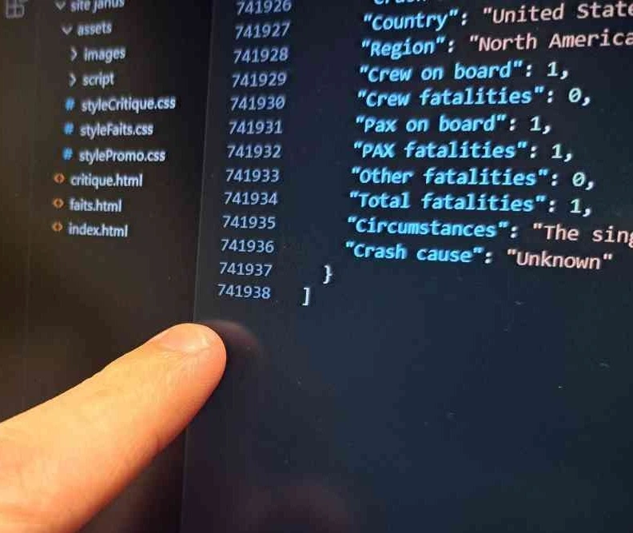

1. Contexte
Le projet de groupe "Dataplay" visait à récolter des données concernant un sujet de notre choix et à les mettre en forme de manière interactive sur un site internet.
Nous avons d'abord exploré différentes idées, notamment une étude sur les toiles d'araignées ou une analyse des zones géographiques les plus soumises aux intempéries. Finalement, notre choix s'est porté sur l'analyse de certains accidents aériens. En effet, nous avons mis la main sur un fichier JSON regroupant par exemple, le nombre de personnes à bord de l'avion, le nombre de victimes ou encore les causes de l’accident. Nous sommes partis de cette base pour le projet.
2. Faire un tri
Le fichier JSON était trop lourd pour l'exploiter directement sur un site internet. Il a donc été décidé de faire un tri. Dans un premier temps, j'ai retiré tous les avions pour lesquels les données étaient incomplètes. Ce tri a pris beaucoup de temps, mais a permis de rendre le fichier plus exploitable pour la suite du projet. Dans un second temps, la décision a été prise de ne garder que quelques constructeurs et modèles.
3. Des illustrations
Une fois le tri effectué et les modèles sélectionnés, j’ai réalisé des illustrations pour chacun des avions retenus. Pour chaque appareil, j’ai réalisé deux vues détaillées : une vue de dessus et une vue de profil, afin de permettre de montrer au grand public à quoi ressemblait l'avion avant son accident. Cette tâche n'a pas pris trop de temps, car les avions sont représentés dans les grandes lignes.
4. En parallèle
Pendant que le tri était en train d’être effectué, les autres membres du groupe commençaient à travailler sur le design du site. Un premier Figma en nuances de gris a vu le jour, pour nous permettre de montrer aux professeurs notre idée de design. Ce premier jet nous a permis de valider le design général.
Avant de passer au code, un nouveau Figma a vu le jour (en couleurs) pour nous permettre de voir à quoi notre site allait ressembler une fois qu’il serait terminé.
5. Le code
Une fois le design validé, nous avons lancé le développement du site en répartissant les tâches selon les compétences de chacun. Un membre du groupe s'est occupé ds animations, un autre sur le design et l'ergonomie. Je me suis occupé de l'intégration des données du fichier JSON et du développement des scripts d’affichage dynamiques.

Pour éviter les conflits, nous avons utilisé GitHub : chaque membre travaillait sur une branche dédiée, intégrée au “main” une fois testée. Cette organisation asynchrone et structurée nous a permis d’avancer efficacement et en limitant aux maximum les erreurs.
6. Les soucis rencontrés
Au début du projet, le groupe a eu des difficultés pour répartir les tâches entre les différents membres.
Le groupe n'a pas échappé aux bugs lors du regroupement des diffférentes branches GitHub.
7. Conclusion
Ce travail de groupe m’a permis d’apprendre à gérer les données d’un fichier JSON et à les exploiter sur un site internet. J’ai aussi été familiarisé à l’utilisation de GitHub et à la correction de bugs.